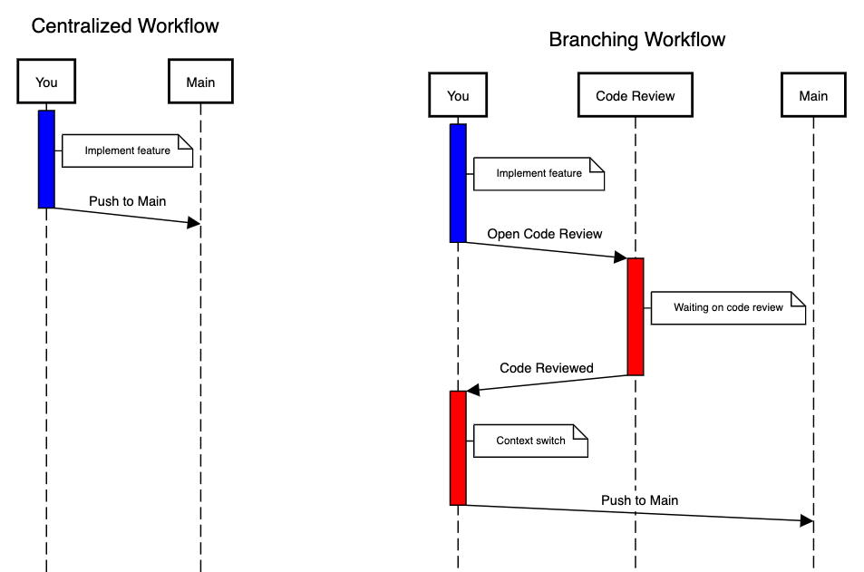
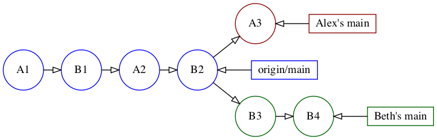
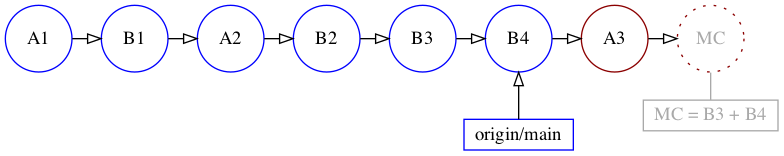

8.Centralized Workflow¶
A centralized workflow is the simplest way to start with Git. With this workflow, you work directly on the main branch instead of in separate feature branches.
Creating branches in Git is extremely easy, so you should only skip creating branches when they would cause extra overhead that isn’t necessary.
In this chapter, you’ll learn about scenarios where the centralized workflow is a good fit. You’ll also learn how to handle common situations that arise when multiple developers are committing directly to the main branch.
When to use the centralized workflow¶
One of the primary reasons to first commit and push your code to a branch is to allow other developers to review your code before you push it to your main branch. If the code doesn’t need to be reviewed, the overhead of creating and pushing a separate branch is unnecessary. That’s where the centralized workflow is a great fit.
Here are a few scenarios where a code review may not be necessary.
1. When working alone¶
If you’re the sole developer on a project, you don’t need the overhead of creating branches since there are no other developers to review your code.
Consider the commands you’d run if you were committing your feature to a branch before merging it to main:
git checkout -b my-new-feature # 1: Create and switch to branch
# Write the code
git add . && git commit -m "Adding my new feature"
git checkout main # 2: Switch back to main
git merge my-new-feature # 3: Merge branch into main
git branch -d my-new-feature # 4: Delete branch
git push main
Compare that to how you’d handle the same update using the centralized workflow. You’d skip the four numbered commands above and end up with only:
# Write the code
git add . && git commit -m "Adding my new feature"
git push main
Even when using the centralized workflow, there are still valid reasons to create branches. For example, if you have experimental or incomplete code that you aren’t ready to commit to your main branch, you can commit it to a feature branch and revisit it later.
In the centralized workflow creating branches is optional since you’re allowed to push your commits directly to the main branch. This isn’t the case in the feature branch workflow which you’ll learn about in the next chapter. In that workflow creating branches is required since pushing to the main branch directly is not allowed.
2. When working on a small team¶
If you’re part of a small team where each team member has a specialized area of knowledge, a centralized workflow is a good choice. For example, if one developer works on backend code using one programming language and another works on front-end code in a different language, it’s not always useful or practical for those team members to review code outside of their area of expertise.
In another common scenario, each developer owns a specific area of the code. For example, in an iPhone app, one developer works on the search flow while another works on settings and account preferences. In this scenario, each member of the team is completely responsible for making the changes they need and ensuring their changes work correctly.
3. When optimizing for speed¶
Code reviews are a great way to improve the code’s quality before pushing it to the central repository, but every code review has some overhead.
After the author commits their change, they need to wait for someone to review it, which can block them from moving forward.
Furthermore, emails and alerts about code reviews are disruptive. Some team members might stop what they’re doing to take a quick look at the code review request to see if they can review it immediately. If not, they need to devote time to do it later. Context switching is especially expensive when performing focused work, such as software development.
Any code that’s pending review creates a mental burden for both the author and the rest of the review team.
The following sequence diagram illustrates some of the extra time and overhead required.

The first red section illustrates the overhead of waiting for your code to be reviewed. The second shows the context switch you have to make when you interrupt what you are currently working on to go back and merge the original code into main.
The longer a code review takes, the more likely it is that other people will introduce conflicts that you’ll have to resolve manually.
If you want to optimize for speed and reduce interruptions, your team can adopt a strategy where code doesn’t have to be reviewed before the author pushes it to the main branch.
Keep in mind that not reviewing code before pushing it to main doesn’t mean that the team can’t review the code afterward. It just means that the code on main might not be as clean and perfect the first time around.
On the other hand, even well-reviewed code is far from perfect. When optimizing for speed, it might make sense to allow for a bit more entropy for the sake of expediency.
This doesn’t mean that you can’t have your code reviewed at all. You can always create a branch to request an ad-hoc code review on a new or complex feature. It just means that there isn’t a blanket policy to require a code review for every new feature.
4. When working on a new project¶
The need for expediency is often stronger when working on a new project with tight deadlines. In this case, the inconvenience of waiting for a code review may be especially high.
While bugs are undesirable in any context, unreleased projects have a higher tolerance for them since their impact is low. Thus, you don’t have to scrutinize each commit as thoroughly before you push it to main.
Even if your new project doesn’t start off using a centralized workflow, don’t be surprised if your team lets you commit and push directly to main once the deadline approaches!
Centralized workflow best practices¶
Here are some best practices you can adopt to make using the centralized workflow easier. These are especially important when working in teams where multiple developers are committing to main.
Two important things to keep in mind are to rebase early and often, and to prefer rebasing over creating merge commits. If you do accidentally create a merge commit, you can easily undo it as long as you haven’t pushed it to the remote repository.
Rebase early and often¶
When using the centralized workflow in a team, you often have to rebase before pushing to main to avoid merge commits.
Even before you’re ready to push your locally-committed code to the remote repository, you’ll benefit from rebasing your work onto any newly-committed code that’s available in main. You might pull in a bug fix, or pull in code for features that you’re building upon.
The earlier you resolve conflicts and integrate your work-in-progress with the code on main, the easier it is to do. For example, if you’re using a variable or constant that was recently renamed, you’ll have fewer updates to make if you pull it in sooner.
Remember, you want to use git pull --rebase instead of just git pull so that you rebase any commits on your local main branch onto origin/main, otherwise this may create a merge commit. You’ll work through an example of this shortly.
Undo accidental merge commits¶
At times, your local main branch may diverge from the remote origin/main branch. For example, when you have local commits that you haven’t pushed yet, and the remote origin/main has newer commits pushed by others.
In this case, executing a simple git pull will create a merge commit. Merge commits are undesirable since they add an extra unnecessary commit and make it more challenging to review the Git history.
If you’ve accidentally created a merge commit, you can easily undo it as long as you haven’t pushed the merge commit to the remote repository.
In this chapter’s project, you’ll work through an example to demonstrate this workflow and how to handle some of the issues you’ll encounter when working directly on the main branch.
Getting started¶
To simulate working on a team, you’ll play the role of two developers, Alex and Beth!
Alex and Beth are working on an HTML version of a TODO list app called Checklists. They’ve just started work on the project, so there isn’t much code.
And don’t worry, you won’t be adding much code to it throughout the next few chapters since your primary focus will be to use it for learning various Git workflows.
Start by unzipping the repos.zip file from the starter folder for this chapter. You’ll see the following unzipped directories within starter:
starter
└── repos
├── alex
│ └── checklists
├── beth
│ └── checklists
└── checklists.git
At the top level, there are three directories: alex, beth and checklists.git. Within the alexand beth directories are checked-out copies of the checklists project.
What’s unique about this setup is that checklists.git is configured as the remote origin for both Alex’s and Beth’s checked-out Git repositories. So when you push or pull from within Alex’s or Beth’s checklists repository, it will push to and pull from the local checklists.gitdirectory instead of a repository on the internet.
The easiest way to work on the project is to have three separate terminal tabs open. Open your favorite terminal program, then open two additional tabs within it.
Note
If you’re on a Mac, Command-T opens a new tab in both Terminal.app and iTerm2.app, and Command-Number switches to the respective tab. For example, Command-2 switches to the second tab.
Once you have three tabs open, cd to the starter folder and then to repos/alex/checklistsin the first tab, repos/beth/checklists in the second tab and repos/checklists.git in the third tab.
cd path/to/projects/starter/repos/alex/checklists # 1st Tab
cd path/to/projects/starter/repos/beth/checklists # 2nd Tab
cd path/to/projects/starter/repos/checklists.git # 3rd Tab
To check what the remote origin repository is configured as, run the following command within alex/checklists or beth/checklists:
git config --get remote.origin.url # Note: The --get is optional
You’ll see the following relative path, which indicates that the remote origin repository is the checklists.git directory:
../../checklists.git
If the remote repository were on GitHub, this URL would have started with either [https://github.com](https://github.com/) or [git@github.com](mailto:git@github.com) instead of being a local path, for example: git@github.com:raywenderlich/agit-materials.git.
Alex’s and Beth’s respective projects have been configured with their name and email, so when you commit from within their checklists folder, the commit author will show as Alex or Beth.
While you could run git config user.name, and git config user.email to verify this, sometimes it’s easier to just peek at the local .git/config file.
Run the following from within alex/checklists and beth/checklists:
cat .git/config
At the end of the file, you’ll see their user.name and user.email settings. You’ll see the following when running the command in alex/checklists:
...
[user]
name = Alex Appleseed
email = alex@example.com
And the following for when running it in beth/checklists:
...
[user]
name = Beth Blueberry
email = beth@example.com
Note
Your own name and email should already be configured in your global .gitconfig file. You can run cat ~/.gitconfig to verify this.
State of the project¶
The remote origin repository, checklists.git, contains four commits, which we’ll refer to as A1, B1, A2 and B2 instead of with their commit hashes. Alex’s and Beth’s projects also have local commits that have not yet been pushed to the remote. Alex has one additional commit, A3, and Beth has two, B3 and B4.
In your terminal, switch to the checklists.git tab and run git log --oneline:
824f3c7 (HEAD -> main) B2: Added empty head and body tags
3a9e970 A2: Added empty html tags
b7c58f4 B1: Added index.html with <!DOCTYPE html> tag
a04ae7f A1: Initial Commit: Added LICENSE and README.md
You can see the four commits on origin: A1, B1, A2 and B2.
Note
The checklists.git repository is a bare repo, which means that it only contains the history without a working copy of the code. You can run commands that show you the history, like git log, but commands that give you information about the state of the working copy, such as git status, will fail with the error: fatal: this operation must be run in a work tree.
Next switch to the alex/checklists tab and run git log --oneline:
865202c (HEAD -> main) A3: Added Checklists title within head
824f3c7 (origin/main) B2: Added empty head and body tags
3a9e970 A2: Added empty html tags
b7c58f4 B1: Added index.html with <!DOCTYPE html> tag
a04ae7f A1: Initial Commit: Added LICENSE and README.md
You can see A3 in addition to the four commits already on origin/main.
Finally, switch to the beth/checklists tab and run git log --oneline:
4da1174 (HEAD -> main) B4: Added "Welcome to Checklists!" within body
ed17ce4 B3: Added "Checklists" heading within body
824f3c7 (origin/main) B2: Added empty head and body tags
3a9e970 A2: Added empty html tags
b7c58f4 B1: Added index.html with <!DOCTYPE html> tag
a04ae7f A1: Initial Commit: Added LICENSE and README.md
You can see B3 and B4 in addition to the four commits already on origin/main.
Here is a combined view of the commits in the three repositories:

So while Alex and Beth are both working on main, their branches have diverged.
At this point, either Alex or Beth could push their commits to origin, but once one of them does, the other won’t be able to.
For the remote to accept a push, it needs to result in a fast-forward merge of main on the remote. In other words, the pushed commits need to be direct descendants of the latest commit on origin/main, i.e. of B2.
Currently, both Alex’s and Beth’s commits qualify to be pushed since both A3 and B3 have B2 as their ancestor. But once the remote’s main branch is updated with one person’s commits, B2 will no longer be the latest commit on origin/main. This means that the other person won’t be able to push without rebasing or creating a merge commit.
You’ll have Beth push her commits to origin first.
Pushing Beth’s commits to main¶
Switch to the beth/checklists tab in your terminal and run git status. It should show the following to verify that it’s ahead of origin/main by two commits:
On branch main
Your branch is ahead of 'origin/main' by 2 commits.
...
Now, run git push to push Beth’s commits to the remote main branch.
It’ll successfully push both commits to the remote repository, i.e. to checklists.git.
Switch to the checklists.git tab and run git log --oneline:
4da1174 (HEAD -> main) B4: Added "Welcome to Checklists!" within body
ed17ce4 B3: Added "Checklists" heading within body
824f3c7 B2: Added empty head and body tags
...
You can see Beth’s two additional commits B3 and B4, ahead of B2.
This is what it looks after Beth’s push:

Next, you’ll attempt to push Alex’s A3 commit to main.
Pushing Alex’s commit to main¶
Switch to your alex/checklists tab and run git status:
On branch main
Your branch is ahead of 'origin/main' by 1 commit.
...
Alex’s repository still thinks it’s one commit ahead of origin/main. This is because he hasn’t yet run a git fetch after Beth’s push.
You’ll run git fetch in a moment, but first, run git push to see what happens:
To ../../checklists.git
! [rejected] main -> main (non-fast-forward)
error: failed to push some refs to '../../checklists.git'
hint: Updates were rejected because the tip of your current branch is behind
hint: its remote counterpart. Integrate the remote changes (e.g.
hint: 'git pull ...') before pushing again.
hint: See the 'Note about fast-forwards' in 'git push --help' for details.
Uh oh. Take a look at the hint message piece by piece.
First, it says:
Updates were rejected because the tip of your current branch is behind its remote counterpart.
That’s right, since the remote branch now contains the two additional commits from Beth: B3 and B4.
Then it suggests:
Integrate the remote changes (e.g. 'git pull ...') before pushing again.
That’s what you’ll do next. But first, run git status again; you’ll see that it still thinks Alex’s branch is ahead of origin/main by one commit:
On branch main
Your branch is ahead of 'origin/main' by 1 commit.
...
Although the origin repository rejected the changes, the local repository still hasn’t fetched updates from the origin repository.
Run git fetch to fetch updates from the remote and you’ll see the following:
From ../../checklists
824f3c7..4da1174 main -> origin/main
When you run git status now, it will correctly show that your local main branch has diverged from origin/main:
On branch main
Your branch and 'origin/main' have diverged,
and have 1 and 2 different commits each, respectively.
(use "git pull" to merge the remote branch into yours)
Run git log --oneline --graph --all to see the log in graph format:
* 865202c (HEAD -> main) A3: Added Checklists title within head
| * 4da1174 (origin/main) B4: Added "Welcome to Checklists!" within body
| * ed17ce4 B3: Added "Checklists" heading within body
|/
* 824f3c7 B2: Added empty head and body tags
* 3a9e970 A2: Added empty html tags
* b7c58f4 B1: Added index.html with <!DOCTYPE html> tag
* a04ae7f A1: Initial Commit: Added LICENSE and README.md
Which is just a textual representation of the following:

Note
Without the --graph option, it would have looked like the commit history was all on one branch. Without the --all option, it would only have shown you the commits on your current branch — that is, on main but not on origin/main. Try running the command without each of the options for comparison.
You can see that Alex’s main has diverged from origin/main. You can’t push to the remote repository in this state.
There are two ways you can resolve this issue:
- The first and recommended way is to run
git pullwith the--rebaseoption to rebase any commits to your localmainbranch ontoorigin/main. - The second way is to create a merge commit by running
git pull, committing the merge and pushing the merge commit to the remote.
Since it’s easy to forget the --rebase option and simply run git pull, you’ll use the non-recommended way first so you can also learn how to undo an accidentally-created merge commit.
Undoing a merge commit¶
Since Alex’s main branch has diverged from origin/main, running a git pull will result in a merge commit.
This is because git pull is actually the combination of two separate commands: git fetch and git merge origin/main.
If Alex didn’t have any local commits, then the implicit git merge part of the command would perform a fast-forward merge. This means that Alex’s main branch pointer would simply move forward to where origin/main is pointing to. However, since main has diverged, this creates a merge commit.
1. Abort the merge commit¶
The easiest way to prevent a merge commit is to short-circuit the process by leaving the commit message empty.
From alex/checklists, run git pull. Vim will open with the following:
Merge branch 'main' of ../../checklists
# Please enter a commit message to explain why this merge is necessary,
# especially if it merges an updated upstream into a topic branch.
#
# Lines starting with '#' will be ignored, and an empty message aborts
# the commit.
Note
If Vim doesn’t open and instead the git pull command succeeds with Successfully rebased and updated refs/heads/main, you may have the pull.rebase option set to true in your global ~/.gitconfig file.
In that case, you can run git config pull.rebase false to override that setting just for this repository so that you can follow along with the chapter. Then to undo the pull, run git reset --hard 865202c. Now running git pull should take you to Vim.
Take a look at the last line of the commit message template. It says:
Lines starting with '#' will be ignored, and an empty message aborts the commit.
This means that you can enter dd to delete the first line and leave the remaining lines since they all start with a #.
However, there’s something reassuring about clearing the complete commit message. Since it takes the same number of keystrokes, you’ll do that instead. Enter dG to delete everything until the end and then :wq to exit.
Now, you’ll see the following:
Auto-merging index.html
error: Empty commit message.
Not committing merge; use 'git commit' to complete the merge.
Note
You’ll also see some hint: prefixed text about setting up a pull.rebase preference. This is something you’ll do in the Setting up automatic rebase section a bit later.
As the last line above indicates, you aborted the commit of the merge, but not the merge itself.
You can verify this by running a git status:
...
All conflicts fixed but you are still merging.
...
Run the following command to abort the merge itself:
git merge --abort
Congratulations, merge commit averted!
2. Hard reset to ORIG_HEAD¶
So what can you do if you accidentally created the merge commit? As long as you haven’t pushed it yet, you can reset your branch to its original commit hash before the merge.
Run git pull again to trigger the merge. When Vim opens, type :wq to accept the default message and commit the merge.
Now run git log --oneline --graph:
* 99f255d (HEAD -> main) Merge branch 'main' of ../../checklists
|\
| * 4da1174 (origin/main) B4: Added "Welcome to Checklists!" within body
| * ed17ce4 B3: Added "Checklists" heading within body
* | 865202c A3: Added Checklists title within head
|/
* 824f3c7 B2: Added empty head and body tags
* 3a9e970 A2: Added empty html tags
* b7c58f4 B1: Added index.html with <!DOCTYPE html> tag
* a04ae7f A1: Initial Commit: Added LICENSE and README.md
Visually, your repository is in the following state:

Now you have a merge commit, MC, that is a combination of all of the contents of origin/main that weren’t in your branch yet. In this case, MC would contain the code from Beth’s B3 and B4 commits.
As long as you haven’t pushed the merge commit to main, you can undo it. First, however, you have to determine what the commit hash of Alex’s main branch was before the merge, and then run git reset --hard using that commit hash.
One way to identify the commit hash is by looking at the commit log. You can visually see that 865202c is the commit hash for the A3 commit, which is where main was before the merge, so you could run git reset --hard 865202c.
There’s also an easier way to identify the commit hash before the merge. When Git commits a merge operation, it saves the original commit hash before the merge into ORIG_HEAD.
If you’re curious, you can run either of the following commands to see what the commit hash is for ORIG_HEAD:
git rev-parse ORIG_HEAD
or
cat .git/ORIG_HEAD
This shows the following:
865202c4bc2a12cc2fbb94f5980b00457d270113
Run the following command to perform the reset:
git reset --hard ORIG_HEAD
You should see the following confirmation message:
HEAD is now at 865202c A3: Added Checklists title within head
You’re back to where you started, which is exactly what you wanted!
3. Rebase the merge commit¶
Another strategy you can adopt is to rebase your main branch, which now contains the merge commit, onto origin/main. This applies A3 and the merge commit on top of B4. Since origin/main already has B3 and B4, i.e., the contents of the merge commit, this removes the merge commit entirely.

To try this approach, create the merge commit again by running git pull and then :wq to save the commit message.
Now run the following:
git rebase origin/main
Then run git log --oneline --graph to take a look at the commit history:
* 0c761be (HEAD -> main) A3: Added Checklists title within head
* 4da1174 (origin/main) B4: Added "Welcome to Checklists!" within body
* ed17ce4 B3: Added "Checklists" heading within body
* 824f3c7 B2: Added empty head and body tags
* 3a9e970 A2: Added empty html tags
* b7c58f4 B1: Added index.html with <!DOCTYPE html> tag
* a04ae7f A1: Initial Commit: Added LICENSE and README.md
You can see that you rebased A3 on top of B4, and the merge commit has disappeared!
Visually, your repository is now in the following state:

This is the same outcome that you would have had with git pull --rebase, which is what you’ll try next.
You could push at this point, but instead, you’ll reset your branch again so you can try git pull --rebase. Since you rebased after the merge, you can no longer use ORIG_HEAD, so you’ll reset to the commit hash directly. Resetting to ORIG_HEAD would have taken you back to the merge commit before the rebase.
Run the following:
git reset --hard 865202c
Then run git log --oneline --graph --all to verify that you’ve reset main.
Using git pull –rebase¶
You previously learned that git pull is the combination of two separate commands: git fetch, and git merge origin/main.
Adding the --rebase option to git pull essentially changes the second git merge origin/main command to git rebase origin/main.
Run git pull --rebase. You’ll see the following:
Successfully rebased and updated refs/heads/main.
Then run git log --oneline --graph to take a look at the commit history:
* c1f9be5 (HEAD -> main) A3: Added Checklists title within head
* 4da1174 (origin/main) B4: Added "Welcome to Checklists!" within body
* ed17ce4 B3: Added "Checklists" heading within body
...
You can see that you’ve now rebased your local A3 commit onto origin/main.
Reset your main branch one final time for the next exercise:
git reset --hard 865202c
Setting up automatic rebase¶
You may occasionally forget that you have local commits on main before you run git pull, resulting in a merge commit. Of course, this is no longer a terrible issue since you now know how to abort and undo merge commits.
But wouldn’t it be swell if Git could automatically take care of this for you? And it can! By setting the pull.rebase option to true in your Git configuration, you can do just that.
This is the middle option in the previous hint message:
hint: Pulling without specifying how to reconcile divergent branches is
hint: discouraged. You can squelch this message by running one of the following
hint: commands sometime before your next pull:
hint:
hint: git config pull.rebase false # merge (the default strategy)
hint: git config pull.rebase true # rebase
hint: git config pull.ff only # fast-forward only
hint:
hint: You can replace "git config" with "git config --global" to set a default
hint: preference for all repositories. You can also pass --rebase, --no-rebase,
hint: or --ff-only on the command line to override the configured default per
hint: invocation.
You can also set pull.rebase to false which is the default, but by setting it you let Git know that “Yes Git, this is really what I want to do so you don’t have to remind me!”
Alternatively you can also set pull.ff to only which means that you’ll explicitly fetch and rebase yourself, i.e. you’ll run the two commands for which git pull is a shortcut. If set this option and try to git pull when a fast forward merge isn’t possible you’ll just get an error: fatal: Not possible to fast-forward, aborting.. If you’d like to try this option out you can, and then just run git config --unset pull.ff to undo it.
Getting back to the option that you’ll actually set, run the following command to set Git up to always rebase when you run git pull:
git config pull.rebase true
Now run git pull.
Successfully rebased and updated refs/heads/main.
You’ll see that it automatically rebased your commit on top of origin/main instead of creating a merge commit. You can run git log --oneline --graph to verify this.
Now, finally, the moment you’ve been working toward! Run git push to push Alex’s newly rebased commit to the main branch of the remote.
git push
You’ll see a confirmation that it pushed to the checklists.git remote:
...
To ../../checklists.git
4da1174..c9266b9 main -> main
Voila! You can now git pull without having to remember to add the --rebase option.
Since git config writes options to a local .git/config file, each developer on your team would have to configure this option for themselves.
Also git config will only configure this option for the repository you run it in. If you’d like to configure this for all repositories on your computer you can run the command with the --global flag, i.e. git config --global pull.rebase true. This will store the preference in your global ~/.gitconfig file so that you don’t have to set this for every repo separately.
Key points¶
- The centralized workflow is a good fit when working alone or on small teams, when optimizing for speed or when working on a new, unpublished project.
- You can still create branches for in-progress code or for ad-hoc code reviews.
- Rebase frequently to incorporate upstream changes and resolve conflicts sooner.
- Prefer
git pull --rebaseinstead ofgit pullto avoid creating merge commits. - Set the
pull.rebaseoption totruein your Git config to automatically rebase when pulling. - There are multiple ways to undo accidental merge commits as long as you haven’t pushed them to the remote repository.
Now that you have a good handle on using the centralized workflow, the next step in your Git journey is to branch towards the branching workflow :]. Proceed to the next chapter to get started!